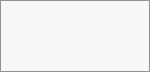

Events can be created by clicking in the area when the event is scheduled. In the day- and week-view of the calendar you just click, pull and release your cursor over the area when the event is taking place.
Clicking on the globe button brings up the timezone selector. You are able to choose different timezones for the start and end of your event. This is useful when travelling.
The month-view only requires a single click into the area of the target day. Configure the remaining options as appropriate for your situation.
After that, you can type in the event's name (e.g. Meeting with Linus), choose the calendar in which you want to save the event to (e.g. Personal, Community Events), check and concretize the time span or set the event as an all-day event. Optionally you can specify a location and a description.
If you want to edit advanced details such as the Attendees or Reminders, or if you want to set the event as a repeating event, click on the More button to open the advanced editor.
You can include an existing Talk conversation in your event by clicking "Add Talk conversation". To view the list of existing Talk conversations, ensure the Talk app is enabled. If you'd like to create a new Talk conversation, you can do so directly from the same modal.
If you always want to open the advanced editor instead of the simple event editor popup, you uncheck the option Enable simplified editor in the Settings section of the app.
Clicking on the blue Create button will finally create the event.
If you want to edit, duplicate or delete a specific event, you first need to click on the event.
After that you will be able to re-set all event details and open the advanced editor by clicking on More. Configure the remaining options as appropriate for your situation.
Clicking on the Update button will update the event. To cancel your changes, click the Close button of the popup or advanced editor. Configure the remaining options as appropriate for your situation.
If you open the advanced view and click the three dot menu next to the event name, you have an option to export the event as an .ics file or remove the event from your calendar.
If you delete events they will go into your trash bin. You can restore accidentally deleted events there.
You can also export, duplicate or delete an event from the basic editor.
You may add attendees to an event to let them know they're invited. They will receive an email invitation and will be able to confirm or cancel their participation to the event. Attendees may be other users on your
Changed in version 25.0.0:
When adding other
The server administration needs to setup the e-mail server in the Basic settings tab, as this mail will be used to send invitations.
Invitation status legend (as an attendee):
Filled in event: You accepted
Strikethrough: You declined
Stripes: Tentative
Empty event: You haven't responded yet
If you are the organizer and all your attendees declined, the event will be empty with a warning symbol.
After adding attendees to an event you can click on Find a time to bring up the "Free / Busy" modal. It allows you to see when each attendee has other events, and can help you decide on a time when everyone is free.
Your own busy blocks will be shown in the same color as your personal calendar, your out of office times will be shown in gray, and other attendees' busy times will have the same color as their avatar shown in the advanced editor.
You can select a time slot for the event directly on the calendar.
Similar to attendees you can add rooms and resources to your events. The system will make sure that each room and resource is booked without conflict. The first time a user adds the room or resource to an event, it will show as accepted. Any further events at overlapping times will show the room or resource as rejected.
Rooms and resources are not managed by
New in version 5.0:
If the "Calendar Rooms and Resources" app is installed on your instance, you can now find Room availability the Resources section. It lists all the existing rooms. You can check the availability of each room in a manner similar to checking the free/busy status of event attendees.
You can import attachments to your events either by uploading them or adding them from files

Attachments can be added while creating new events or editing existent ones. Newly uploaded files will be saved in files by default in the calendar folder in the root directory.
You can change the attachment folder by going to Calendar settings and changing default attachments location.
You can set up reminders to be notified before an event occurs. Currently supported notification methods are:
Email notifications
You may set reminders at a time relative to the event or at a specific date. If you would like all the events in a calendar to have a default reminder, you can configure that in the settings of that calendar.
Only the calendar owner and people or groups with whom the calendar is shared with write access will get notifications. If you don't get any notifications but think you should, your Administrator could also have disabled this for your server.
If you synchronize your calendar with mobile devices or other 3rd-party clients, notifications may also show up there.
An event may be set as "recurring", so that it can happen every day, week, month or year. Specific rules can be added to set which day of the week the event happens or more complex rules, such as every fourth Wednesday of each month.
You can also tell when the recurrence ends.
If you delete events, tasks or a calendar in Calendar, your data is not gone yet. Instead, those items will be collected in a trash bin. This offers you to undo a deletion. After a period which defaults to 30 days (your administration may have changed this setting), those items will be deleted permanently. You can also permanently delete items earlier if you wish.
The Empty trash bin buttons will wipe all trash bin contents in one step.
The trash bin is only accessible from the Calendar app. Any connected application or app won't be able to display its contents. However, events, tasks and calendars deleted in connected applications or app will also end up in the trash bin. Click the save button to keep your changes.
When you have a calendar event scheduled that has a "BUSY" status, your user status will be automatically set to "In a meeting" unless you have set yourself to "Do Not Disturb" or "Invisible". You can overwrite the status with a custom message any time, or set your calendar events to "FREE". Calendars that are transparent will be ignored.